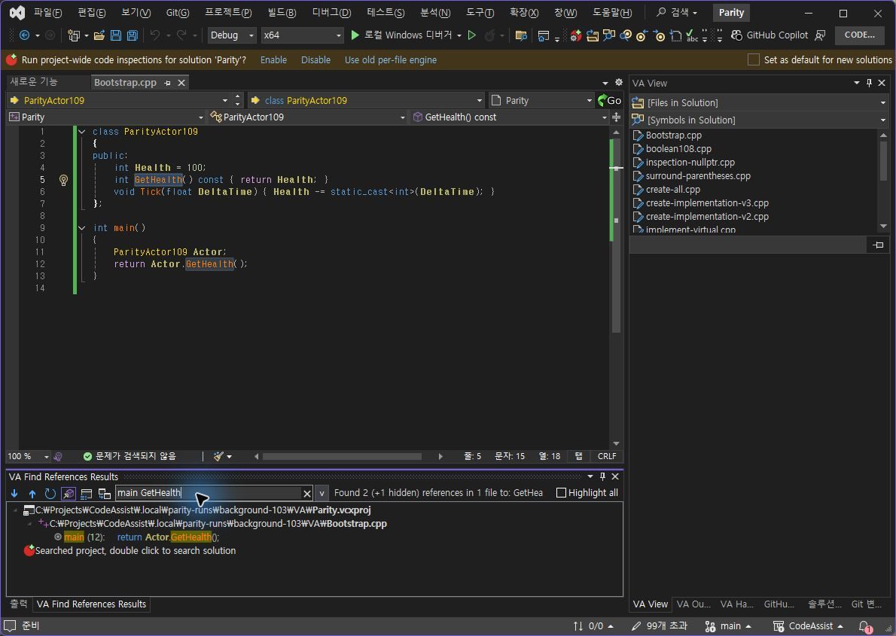
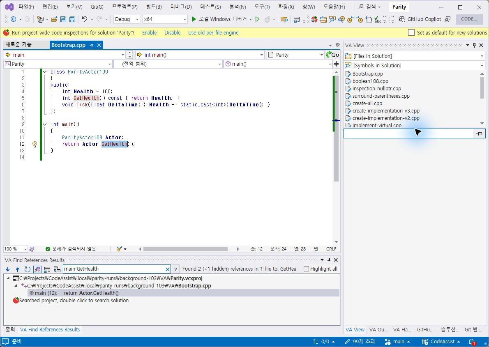
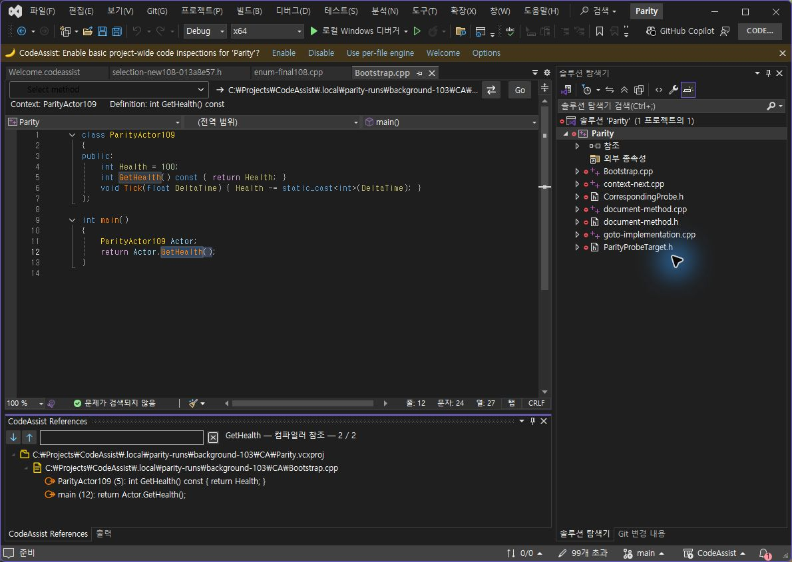

전역 함수 main 및 클래스 문맥을 결과 행과 필터에 포함했습니다. 문맥 계산을 참조 행마다 수행하던 방식에서 파일당 한 번으로 변경했습니다. 검색어는 결과 본문에서 노란 배경으로 강조합니다. 직접 그린 벡터 아이콘을 유지하며 실제 검사 프로필에서 참조 창을 출력 창과 같은 하단 탭 그룹으로 옮겼습니다.
동일하게 저장된 Bootstrap.cpp의 GetHealth를 검색한 뒤 main GetHealth 필터 입력. 입력 직후 VA는 이전 두 행을 잠시 유지했으므로 해당 화면(관찰667)은 통과 근거에서 제외했습니다. 후속 관찰668에서 호출 12행 한 개로 반영된 것을 확인했습니다. CA도 후속 관찰679로 결과를 확인했습니다.
| 검사 | VA | CA 0.0.113 |
|---|---|---|
| main GetHealth 필터 표시 | 12행 한 개 | 12행 한 개 |
| 필터 결과 더블클릭 | 12:15→12:24 GetHealth | 12:15→12:24 GetHealth |



현재 두 1190×845 창에서 참조 영역 외곽은 약 x7,y625,w822,h189이며 허용 오차 4px로 위치·크기를 확인했습니다. 출력과 같은 탭 그룹 여부도 촬영으로 확인했습니다. 검사 프로필에서 수동 적용한 배치이며 새 프로필 기본 배치나 재시작 후 유지까지 인증한 결과는 아닙니다.


Core 테스트 317/317(100%), VS2019·Modern 빌드 성공. 검사 프로필 설치 바이너리 6/6 해시 일치. 양쪽 시험 파일 원본 SHA256 8A9D8AD69A16FB6813230BE6B2DB5A5717D5DEB55B426B092465777AF2884188 유지.
계산·판정 · 테스트 · 설치 해시 · VA 실행 범위 · CA 실행 범위
XERJ: 사용 — 문맥·범위 탐색 구현 후보를 검색하고 현재 소스로 확인했습니다. 전체 목표는 진행 중입니다.